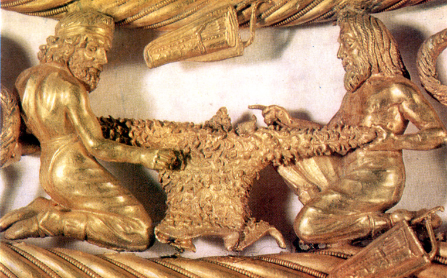

After 35 years of research of Homeric question, a new science – Apocriphology and new methods of reading of hidden texts in ancient sources appeared. The hidden texts of Homer, Hesiod, Apollonius Rodossky, Plato, Aristotle, Archimedes and other ancient authors have been read. The autographs of Aristey Proconessky, Cleopatra, Homer, Achilles, Scythian and Anacharsis have been found in 1150 lapidary monuments in the Northern Black Sea coast and analysed. It gave the opportunity to restore the biography of Aristey Proconessky the founder of ancient culture, the Cimmerian who was born on Olbia 2750 years ago.
Key words: Aristey Proconessky, Homer, Olbia, Anacharsis, Scythian, Cleopatra, Achilles, Apocriphology, hidden texts.
 Рис. 1. Арістей Проконесський. Ахілл, 621 р. до н.е.
Рис. 1. Арістей Проконесський. Ахілл, 621 р. до н.е.
11 лютого 2016 р. за старим стилем виповнилося 2750 років від дня народження засновника античної культури Арістея Проконесського, якій народився в Ольвії-1 (Миколаїв)! Нажаль, місце розташуванню Ольвії-1 на Табірному полі Миколаєва біля Алібанту (археологічна пам’ятка «Дикий Сад»), нині повністю забудоване. Про Арістея Проконесського науці сьогодні нічого конкретно не відомо. Ця стаття є наслідком 35-річних досліджень навколо вирішення гомерівського питання [3-15,17]. В 2008 р. в «Іліаді», «Одіссеї», Гесіода, «Аргонавтиці» Аполлонія Родоського, були знайдені приховані автобіографічні вірші Гомера і розроблена методика їх читання [3,6,10,15]. На базі цієї методики в лапідарних написах на мармурних плитах розшифровано біля 1150 (!) археологічних пам’ятників, які були знайдені археологами за останні 200 років в Північному Причорномор’ї. Встановлення авторства і датування пам’ятників виявило, що їх створили лише 6 чоловік: Арістей Проконесський (734-640), Клеопатра (662-591), Гомер (657-581), Ахілл (657-609), Скіф (633-582) і Анахарсіс (620-513). Клеопатра була онукою Арістея, а її брати-близнюки по батькові, Гомер і Ахілл, – правнуками. Скіф був сином Гомера і Клеопатри, а Анахарсіс (Телемах) – сином Гомера і Пенелопи.
Важливість цього акту важко переоцінити. По-перше, ці автографи дають нам право затвердити всіх 6-х авторів історичними особистостями і визнати їх нашими земляками. По-друге, велика і різнобарвна база опрацьованих першоджерел свідчить про працездатність методики читання прихованих текстів. Інформація про це відкриття розміщена на моєму сайті «Гомер і Атлантида» [9] та міжнародному – «Academia.edu». Сьогодні йде робота над підготовкою багатотомного «Довідника прихованих текстів стародавніх першоджерел Античності, Християнства та Київської Русі», а нова наука, яка займається читанням стародавніх прихованих текстів отримала назву Апокрифологія. Тут і надалі вказані роки до нової ери в старому стилі. Арістей Проконесский, Клеопатра і Гомер розробили кіммерійські хронологію і календар, які майже не відрізнялися від сучасних. Греки їх не сприйняли, але вони діють в таємних текстах [7,8,10].
Родоначальник скіфського роду, кіммерійський цар, Таргітай (776-696), 7 серпня 753 р. на території сучасного Миколаєва побудував три міста (одночасно із заснуванням Риму!): Ольвію-1 (Табірне поле), Борей (на місці будинку Адміралтейства) і Нісон (Широка Балка). Ольвіей-1 було назване місто на честь його доньки Сфено «Щасливою». Місто Борей – на честь Таргітая, як «Північного» царя, а місто Нісон «Плавців по морям» – на честь моряків. Некрополь Борея біля центрального входу в Суднобудівельний завод ім. 61-го комунара нашими археологами вже частково розкопаний так само, як і місто Нісон в Широкій балці. З покоління в покоління в роду Таргітая передавалося, що вони є нащадками атлантів, які заснували тут своє місто, яке Гомер в «Одіссеї» (XXIV, 304) назвав Алібантом. В цьому гекзаметрі він зізнається: «Родом я з Алібанту», тобто з «Філи померлих». Те, що Алібант був мертвим, коли сюди прийшов Таргітай, відповідає дійсності. Археологи О. Смирнов, К. Горбенко і Ю. Гребенников визначили граничні дати існування «Дикого Саду»: 1250-900 рр. [2] Тому Арістей Проконесський розмістив тут Аїд, а Гомер прозвав це місто Алібантом і Аїдом. В «Одіссеї» (XI, 515) вказане точне положення Аїду (також Ольвії-1) – біля злиття Стіксу (Інгул) і Коциту (П. Буг) [1].
З серпня 758 р. Таргітай, як колоніст філи Гілеї, входив до складу Пританії в Афінах, яка складалася з 10 філій. В ній були представлені інші грецькі колонії. В раду Пританії входило 500 представників, по 50 чоловік від кожної філи. Раз на рік біля місяця кожна з них керувала Пританією по жеребу. Ця традиція була започаткована ще за часи існування Атлантиди та Алібанту в XV-VIII стор. Гілея була коморою Стародавньої Греції. Саме завдяки продажу зерна Таргітай побудував тут три вищезгадані міста, а також заснував на шляху до Греції ще два міста: в 750 р. – Кіммеріду, це місто за часи Гомера називалося вже Елаєм (Седдюльбахір, Туреччина), а в 743 р. – Тіру (Белгород-Дністровський, Одеська обл.).
Дружиною Таргітая була Клеобуліна (774–704), донька Зороастра (794 –714), і його дружини, дочки фінікійського царя Кадма (819–751), якому приписують створення грецького алфавіту на основі фінікійського. Клеобуліна була пророчицею, і в неї народилося 3 доньки й 6 синів. Старшим був маг і віщун Мопс, а потім – Ліпоксай і 10 лютого 733 р.- Колоксай. Він був прозваний Атлантом за те, що, на місці загиблої Атлантиди, 7 вересня 695 р. заснував місто Євпатор (Керкінітіду). Одна з дочок Клеобуліни, Сфено (749-696), змалку навчилася читати й писати. Сам Таргітай був поетом і коли побачив, що Сфено полюбляє читати, кожен раз привозив їй книжки з Афін, Єгипту і Фінікії. Сфено збирала афоризми, загадки, шаради, акровірші. Вона першою потрапила на приховані вірші в П’ятикнижжі Мойсея. В 12 років Таргітай полюбив свою доньку Сфено і вона народила йому двох близнюків, а 11 лютого 734 р. в Ольвії-1 народився Арпоксай («Жадібний» до знань), якій доводився правнуком Зороастру.
В 9 літ Арпоксай став писати вірші краще за батька, мати ховала їх від Таргітая, але той вже відчув це і з’явилася заздрість. Сфено навчила Арпоксая читанню і складанню прихованих віршів. З 12-ти років він вже керував вітрильниками самостійно і плавав в різні міста Греції, виконуючи завдання матері, яка керувала в Гілеї продажем зерна. 16 травня 715 року, на 34-річчі Сфено, в Ольвії-1 Мопс попередив, що Таргітай разом зі Сфено загине за кордоном 8 жовтня від молодого хлопця. Таргітай відразу вислав в Тіру Ліпоксая, а Колаксая він послав раніше відбудовувати Кіммеріду.
4 серпня 714 р. Таргітай вигнав 19 річного Арпоксая з Аїду і той поплив до Мілету. В 712 р. Арпоксай видав в Афінах свою першу поему «Про коштовні каміння» і як кращій поет Еллади в 23 роки отримав Пальмову гілку. В 708 р. Арпоксай винайшов пергамент і налагодив його виготовлення в Гілеї. До 7-річчя вигнання з Гілеї, 4 серпня 708 р., моряк Арістей зрізав волосся і залишив лише чуб (оселедець). Такий чуб носив і батько Гомера, моряк і вигнанець Лік. На цей час Арпоксай вже був олігархом, входив до ради п’ятисот, а 13 серпня 707 р. в 26 років був обраний до складу Дев’яти архонтів правителів Еллади. У 704 р. любитель його поезії, цар Боспору Фракійського, Аспорух, посватав Арпоксая за римлянку Клавдію. В Кілікії в 698 р. в Арпоксая і Клавдії народився улюблений син Автолік. 4 серпня 698 р. Арпоксай видав на пергаменті в Афінах першій епос Європи «Арімаспейю» на 400 сторінках в 3-х книжках. В епосі він прославив батьківщину Гілею, Аїд (Миколаїв), і своїх батьків, Таргітая і Сфено. Батька він там назвав Гомером (епонім кіммерійців). Тоді ж Арпоксай отримав ім’я Арістея («Знаменитого»), як перший поет Еллади.
У травні 697 р. Арістей з Клавдією і двома дітьми приїжджав до Аїду до батька й матері, але примирення було недовгим. Сфено він привіз багато цікавих книжок і «Арімаспейю», присвячену батькам. Арістей розхвалив всі достоїнства матері могутньому лідійському молодому царю Гігу (723-652), той прибув до Ольвії-1 і посватав за себе Сфено в 52-й рік її народження 16 травня 697 р. Гіг запросив до себе в Трою Таргітая і Сфено. Коли вони від’їжджали з Трої до себе в Гілею, Таргітай посварився з молодим Гігом. В точності з прогнозом Мопса, 26-річний Гіг 8 жовтня 696 р. вбив 80-річного Таргітая списом з наконечником морського скату. Сфено кинулася з кріпосних мурів і розбилася. Арістей з Клавдією поховали батьків у Елаї (Седдюльбахір). Влада в Гілеї перейшла до Колоксая. Арістей відмовився від влади, бо знав, що брат його вважав іноземцем. При цьому, Арістей залишався з Колоксаєм у добрих стосунках і в голодні роки привозив кораблями хліб у три міста Аїду.
8 жовтня 691 р. (в хронології Арістея це була знакова дата – 85 день 85 року!) Арістей в Афінах зробив доповідь про історію загибелі Атлантиди 756 літ тому саме в цей день і про те, що його рід є нащадками атлантів, які правили Грецією. Це не сподобалося грекам, бо вони вважали кіммерійців варварами. Він розповів, що Атлантида була розташована в Тавриді (Криму) на місці Кіркінітіди (Євпаторії) і загинула (в сучасній хронології) 8 жовтня 1447 р. після вибуху вулкану (Санторін) на острові Фера (Тера) від цунамі. Ця дата вибуху Санторіна збігається з сучасними науковими даними. Гомер у прихованих текстах пише, що велика хвиля пройшла протоки сучасні Дарданелли й Босфор, піднялася до рівня Гераклових стовпів, і змила Атлантиду у Понт (Чорне море) під час потужного землетрусу. За 4 дні до цього жерці попередили про це, і 10 видатних родів на 10 кораблях приплили до Гілеї (Миколаїв) і заснували тут своє місто (Алібант), яке сьогодні розкопане і отримало назву «Дикий Сад». [2, 13]
27 вересня 681 р. Арістей заснував місто Феодосію. Автолік в 680 р. переїхав з Кілікії в Сідон (Сайда), тут у його дружини, гречанки Амфітеї, народилася 8 жовтня 677 р. мати Гомера, Клімена. 28 серпня 675 р. Арістей збудував місто Проконесс (Мармара) і там провів останні 35 років свого життя. На острові були величезні поклади білого мармуру, якій добувають і сьогодні. Як олігарх, Арістей накопичив свої статки завдяки продажу хліба, пергаменту і мармуру. Крім того, Арістей збагнув, що утаємничені тексти, написані на мармурі, здатні донести правду про їх життя крізь тисячоліття. Гомер пише в таємних віршах «Начал» Евкліда, що гербом міста Проконесс («Чуб, Оселедець») був тризуб Посейдона, головного бога Атлантиди. Батько Ахілла і Гомера, кіммерійський цар Лік, народився в 676 р. в Ольвії-1 у Спаргапейта і Майї, брата і сестри царя Колоксая-Атланта (733-666), сина Таргітая. Майя, від Гіга народила Пана 4 квітня 674 р. в Пантикапеї «Ясла Пана». Ця дата вважається днем заснування нею цього міста. У 673 р. Арістей видав в Афінах «Епіграфи». А 10 квітня 672 р. у Майї в Ольвії-1 від Арістея народився неперевершений майстер Гефест, його псевдонімами були Леохар, Фідій, Зевксіп, за ними можна дослідити його творчість. В 9 років чоловік Майї, Спаргапіт, вигнав його, як нерідного, з Аїду. Гефест подався до Арістея в Проконесс. Потім, пройшовши його школу мистецтва, перебрався на острів Лемнос.
18 серпня 666 р. Гіг вбив Колаксая-Атланта. Влада в Гілеї перейшла до його сина, Спаргапейта, діда Гомера по батькові. Розгорілася 14-річна війна між Гігом і синами Колаксая. І знову Арістей, як старший з роду, мав право на царство, і знову він відмовився від влади. У 664 році він разом з Клавдією приїжджав в Гілею. На зворотному шляху з Ольвії-1 в Проконесс корабель зупинився на острові, нині Березань, і там від укусу змії 3 жовтня 664 р. загинула Клавдія. Це уточнення міфу про Орфея й Евридику. В 13 років Лік закохався у 23-річну Іду, дочку Гіга й Клавдії. Гіг почав їх переслідувати в Аїді. Лік на кораблі, втікаючи від переслідування, відвіз її на Кавказ. Там у Іди в Схерії (Батумі) 28 жовтня 662 р. народилася Клеопатра, яка росла до 7 років під опікою царів Алкіноя й Арети.
Лік в 659 р. плавав до Автоліка в Сідон. Там він закохався у Клімену, дочку Автоліка і онучку Арістея. Через рік він прислав корабель за нею до Сідону. Леда (Клімена) вже була вагітна від Зевса (Автоліка). По дорозі до Аїду, на Кіпрі, вона народила на кораблі Єлену Прекрасну 13 вересня 658 р. Через 20 днів вони прибули до Аїду. 14 вересня 657 р. у Ліка і Клімени народилися близнюки, першім Зет (Гомер) в Ольвії-1, а 15 вересня в Бореї – Калаїд (Ахілл). В міфі про Ахілла йдеться, що при народженні мати його, тримаючи за п’ятку, опускала у води Стіксу (Інгулу), щоб збезсмертити.
13 серпня 652 р. в Пафлагонії, в битві біля Кітору, Спаргапейт помстився за батька і вбив Гіга. Встановився мир і Гефест в 19 літ повернувся з Лемносу до дому в Аїд. Від Спаргапейта його ховали в печері (в Яхт-клубі) Майя і Клімена. Зі Схерії (Батумі) Клеопатра, з Ідою повернулися до Аїду в 654 р. Дитинство в Аїді (Миколаїв) було найщасливішим в житті Клеопатри, Єлени, Зета і Калаїда. Батько Лік обучав синів і Клеопатру військовим, корабельним справам, астрономії й гіпнозу. Клімена вчила й Клеопатру з 3-ма своїми дітьми,- грамоті, мовам, літературі, історії, а Гефест – мистецтву. Мати Гомера називала себе кентавром Хіроном («Жорстким») вчителем. Гомер писав, що саме Клімена придумала для нього слово кентавр («поганий тавр»), з огляду на скіфа Пана, який народився в Тавриді.


2.1. 2.2. 2.3.
Рис. 2. Автографи Арістея Проконесського 704, 696 і 644 рр.
Гефест навчився мистецтву у свого батька Арістея, якого греки невипадково прозвали Оленом («Рукастим»). Про це свідчать знайдені, переважно в Херсонесі, 31 автограф Арістея і це завдяки Анахарсісові. 4 жовтня 575 р. він заснував в Тавриді місто Херсонес (Севастополь), яке назвав так на честь сучасного миколаївського півострова. Анахарсіс передбачив, що це місто переживе Ольвію-2 і перевіз сюди прах матері, Пенелопи, і пам’ятники Арістея. На Рис. 2 показані три автографи Арістея Проконесського, написи яких виповнені на латинській мові. Прихований текст пам’ятника (Рис.2.1) із 29-річним автопортретом, присвячений 10-річчю вигнання Арістея з Аїду Таргітаєм, яке виповнилося 4 серпня 704 р. У пам’ятнику (Рис. 2.2) «трубач Клавдієвого легіону» сповістив про загибель батьків від Гіга 8 жовтня 696 р. і про народження 16 травня 696 р. Клавдією 2-х близнюків, брата і сестри. Третій пам’ятник є надгробком (Рис. 2.3). Він присвячений смерті Автоліка 8 жовтня 646 р. Арістей написав, що поставив його 2-го листопаду 644 р. на цвинтарі в Елаї (Седдюльбахір) разом з Гомером. У битві в Іонії Спаргапейт був підло вбитий в спину сином Гіга, Паном, 29 липня 646 р. А 3 вересня 646 р. батька Гомера Ліка (676-596) народ обрав царем Гілеї. З цієї нагоди на гроші Арістея його син Гефест в Аїді відлив золоте руно. Його вручили Ліку 3 вересня 646 р., як символ царської влади Гілеї. Руно зображено на золотій скіфській пекторалі IV в. (Рис. 3), ймовірно, ще існувало в ті часи. [15]  Рис. 3. Фрагмент золотої скіфської пекторалі.
Пан, молодший син Майї й брат Ліка, повернувся до Аїду і забажав одружитися з Єленою. Лік і Клімена швидко видали її заміж за Гефеста. Тоді він захопив у полон Клімену й Ахілла разом із золотим руном. Лік в битві з ним поранив його в руку. Пан спалив його 6 кораблів, що стояли на березі. В той час тут мешкало більше троянців, ніж ахейців, прибічників Ліка. Іда вбила свого чоловіка за те, що той захопив Ахілла для Пана. Лік з Ідою (матір’ю Клеопатри) змушений був тікати таємно в ночі до Арістея в Проконесс. За допомогою Клеопатри з Аїду уплили з Нісону в травні 646 р. також Гомер і Єлена з Гефестом, які переховувалися у печерах. Так була саме тут, започаткована 20-річна Троянська війна.
Арістей допоміг Ліку влаштуватися в Елаї (Седдюльбахір), який збудував їх предок Таргітай. Гомер на початку 645 р. почав плавати на кораблі з Елаю в Проконесс до Арістея. Навчання тривало 5 років до його смерті. З усьому видно, що вони обожнювали один одного. Арістей побачив у сині своєї онуки Клімени продовжувача своєї справи й навчив Гомера всім своїм не аби якім знанням. Саме тоді Арістей назвав Зета Платоном за широту його знань для його віку. А Зет ретельно вивчив «Арімаспейю» Арістея прийшов до висновку, що епос є оригінальним і не запозиченим. Через те, що в епосі Таргітай був названий Гомером, цебто кіммерійцем, то на своє 13-річчя Зет прийняв ім’я Гомера для себе, як псевдонім. Це сподобалося Арістею і він йому подарував кубок. Разом Арістей і Гомер 4 роки розробляли план будівництва міста-фортеці Ольвії-2 (с. Парутине). Місце розміщення Арістей добре знав, а як моряк багато бачив фортець.
В Аїді Каллаїд (Ахілл) з 9 літ обучав дітей скіфів військовій справі. Цю справу він продовжив і у полоні, хоча мати та він сам знаходилися під постійною охороною військових Пана. Клімена на всяк випадок носила при собі кинджал і не підпускала до себе Пана. Клеопатра, як онучка Гіга, залишилася в Аїді, щоб допомогти звільнити з полону Клімену і Калаїда. Вела переговори з Паном, але він ні за які гроші не хотів їх звільняти. Калаїду 15 вересня 642 р. виповнювалося 15 років. Він виглядав досить рослим і потужним і міг бути загрозою Пану. Той вирішив у цей день його стратити. Про це дізналася Клеопатра і скликала з ранку всіх його юнаків, котрих набралася тисяча. Коли їх батьки прийшли до дому Калаїда на сучасному Табірному полі Миколаєва, то їх чекала ця тисяча, яка стала на захист свого вождя. Батьки відступили й не стали з ними воювати. З тих пір Калаїда прозвали А-хіллом («Один, як тисяча»)! Пан нищив їх родичів і повстала задача врятування Клімени й Ахілла.
Клеопатра прибула в Елай до 13-ліття Гомера. В 17 років дівчина провела корабель через два моря. Там в Елаї вона започаткувала Платонівську Академію, першими членами якої стали Арістей, Гефест, Клеопатра, Гомер і Ахілл. Арістей в 89 років вперше побачив і закохався в її красу, талант, і назвав своєю Музою. Там вона з Ліком і Гомером розробили план врятування Клімени й Ахілла. За цим планом у листопаді 642 р. до Борею прибув торгівельний корабель, начебто з Фінікії. Його привів друг Ліка, цар лікійській, Сарпедон. Клеопатра на день народження Клімени, 8 жовтня 642 р., напоїла її й умовила віддатися Панові. Вагітність мала знизити підозру до втечі. Поки «фінікійці» торгували, наступила зима, а потім і весна. До них всі в Аїді вже звикли. Наближалися роди Клімени. Пан з цього приводу влаштував бенкет у себе в Бореї. Пізно вночі Клімена й Ахілл відпросилися до дому, де їх чекала Клеопатра. Вона приспала гіпнозом охорону і всі вони, взяв з собою і Майю, спустилися до корабля. Там їх скіфи зі Стіксу (Інгулу) тихо відбуксували до Коциту (П. Бугу), а звідти вони вже поставили вітрила. В протоці Босфор у Клімени на кораблі народилася від Пана друга дочка, Клітемнестра.
20 липня 641 р. Арістей, приголомшений цією вдачею Клеопатри, запросив Ліка, Іду, Клімену, Клеопатру, Гомера й Ахілла до себе в Проконесс. Там він, як старійшина роду, склав Заповіт про передачу в Аїді Гілеї їм прав на володіння трьома містами, побудованими його батьком Таргітаєм. Клеопатру і Гомера олігарх призначив розпорядниками своїх грошей для будівництва Ольвії-2 (с. Парутине). Просив назвати його на честь міста Ольвії-1 (Миколаїв). Потім Арістей написав листа своєму другові, могутньому цареві Боспору Фракійського, Котію Аспоруху. А той написав листа Пану, що він є гарантом будівництва Ольвії-2. Якщо Пан надумає перешкодити Гомеру і Клеопатрі, то він буде мати справу з ним. Цей Заповіт від 20 липня 641 р. цитується в багатьох пам’ятниках, як право на володіння Гілеєю. Арістей заповідав його прах перевезти на батьківщину, а також просив на честь батька Таргітая в його день народження, 16 липня, раз на 4 роки влаштовувати Олімпіади. Арістей заповів за розробленим із Гомером програмами навчати дітей з 8 до 12 років. Першу школу для дітей з трьох міст Аїду, в якій навчали дітей грамоти, започаткувала мати Арістея, Сфено. Заняття проводилися щорічно з 4 жовтня до кінця квітня після 728 р. Арістей теж в цьому допомагав матері. Після них цю програму продовжили Майя, а потім Клімена і Клеопатра, аж до Анахарсіса, якій заснував гімназії спочатку в Ольвії-2, а потім в Ольвії-1. За 753-575 роки в Причорномор’ї Гілеї було збудовано кіммерійсько-скіфськими царями 11 міст: дві Ольвії, Борисфен, Нісон, Тіра, Євпатор, Феодосія, Пантікапей (Керчь), Никій (о-в Березань), Алектор (Очаків) і Херсонес (Севастополь). В них панував демократичний устрій, не було рабства і вони входили до Пританії в складі Гілеї, яка з 592 р. називалася Скіфією.
Арістей прищепив Гомерові любов до Єгипту і заповідав йому розшукати там детальні свідчення про Атлантиду, а разом з Клеопатрою він поставив їм завдання віднайти спосіб, як надрукувати свідчення про Атлантиду, бо греки й слухати не хотіли про те, що «варвари» колись володіли ними. Цей заповіт був виповнений Гомером в «Діалогах» Платона. Саме Арістей фактично створив інститут пам’яті та прищепив своїм нащадкам любов до історії батьківщини й своїм предкам. В їх роду відмічалися дні народження при житті та дати сконання предків, які працювали, як годинник. Будь кого не можуть не здивувати наведені тут точні дати подій такої давнини. Так от, саме Арістей на базі єгипетського розробив свій календар, якій майже не відрізнявся від сучасного. В ньому звичайний рік у 365 днів починався в день народження його батька Таргітая і це був 1-й день 1 року, якій сьогодні відповідає даті 16 липня 776 р. до н.е. За пропозицією Клеопатри в місяць Антестерій (лютий-березень) додавався 1 день у високосні роки. Дати подій відраховувалися в днях і роках від цієї початкової дати. Гомер, наприклад, народився в 61 д. 119 р. і це відповідає даті 14 вересня (776-119=) 657 р. Цим календарем, наприклад, користувалися нащадки Гомера, Євангелісти Лука й Іван Богослов у часи нової ери. Гефест намагався втілити цей календар у своїй філі, але Солон заборонив це. Тому цей календар залишився внутрішнім для роду Таргітая. [7] І тоді повстала задача, як ввести в історію початкову дату календаря для майбутніх поколінь у вигляді, приємному для греків. Анахарсіс під псевдонімами Калліна і Павсанія, для цього видумав проведення Олімпіади в Греції, коли начебто записувалися вперше імена героїв. Так що, календарні розрахунки по номерах Олімпіад, фактично велися від дня народження Таргітая 16 липня 776 р. А у іменах перших переможців читається прихований текст про Скіфа, переможця 10-ти скіфських Олімпіад. Анахарсіс писав 16 липня 520 р.: «Десятки послідовників в Іонії у Клеопатри й Скіфа після проведення першої Олімпіади в 1 д. 148 р.(16 липня 628 р.). Анахарсіс на 28-й Олімпіаді». Тобто, як бачимо, Олімпійські ігри були засновані в Кіммерії.
Арістей першим зауважив, що ми мешкаємо на земній кулі, він прищепив любов до геометрії Гомеру, який потім написав свої «Начала» під псевдонімом Евкліда, а також Піфагора. У 19 років Гомер приплив в Сідон (Сайду) до бабці Амфітеї й та йому подарувала велику наукову працю Арістея про ріку Океан, яка обтікає усю земну кулю. В описі щита Ахілла в «Іліаді» (XVIII: 369-621) саме ріка Океан (Інгул) обтікає сучасний миколаївський півострів. [4] Арістей, як моряк, заклав основи астрономії і дав назви Північним сузір’ям. Мала і Велика Ведмедиці, а також сузір’я Лева були названі ним так через те, що миколаївський півострів має вигляд ведмедиці, або лева (мис Гіпполай – «Великий лев» у Геродота). «Арімаспейя» Арістея не дійшла до нас тому, що вона не про греків. Анахарсіс, виконуючі заповіт Гомера, писав 28 липня 521 р. до 60-річчя загибелі Гомера: «Клянуся, що останні 15 літ кожен рік видав власноручно в Афінах по 100 екземплярів «Іліади» і 850 екземплярів «Арімаспейї», як ліки проти смерті Арістея».
Збереглися твори Арістея під псевдонімами Калліна й Анаксагора, в них читаються його приховані тексти. Як філософ і перший мудрець Арістей згадується під псевдонімами: Сократа, Пітака з Мітелени, Фалеса Мілетського, Левкіїпа, Ферекіда Сіросського. Як поет і бард він мав псевдоніми: Орфея, Олена, Гіппонакта, Ксанфа, Евмолпа, як поет-комедіограф і актор – Кратета Афінського і Тімарха, як скульптора. Арістей, як письменник і логограф під псевдонімом Гекатея з Мілету, написав «Землеопис», в якому вперше згадана і нанесена на одну з найдавніших європейських карт Скіфія і колонія Кіркінітида, де він позначив скіфське місто Кардіс. Тепер стало зрозуміло, що цим він позначив («Серце») Атлантиди. Найвагомішим здобутком Арістея є 31 напис на лапідарних пам’ятниках, які є автографами й щоденниками (Рис. 2). Вони дійшли до нас від автора – їм не має ціни. Ці автографи свідчать про те, що все, чим користувався Гомер і його оточення в методичному плані, було придумано Арістеєм і його батьками, Таргітаєм і Сфено. Без цих автографів дуже важко було би розібратися з тим, кому і що належить з них. В останньому автографі, складеному за 20 днів до сконання, він визнався в тому, що свідомо жертвує своїм життям, заради любові до Клеопатри. 21-річна Муза це зрозуміла заздалегідь і приплила з Аїду таємно в Проконесс 1 серпня 640 р. до 93-річного Арістея. Через 24 дні любовних втіх Орфей скінчався на руках у Музи 25 серпня 640 р. За три дні до сконання вчителя, Гомер приплив до Проконессу, і застав його при смерті в руках своєї сестри й дружини. На той час Клеопатра від Гомера вже народила в Аїді дочку Тіро і двох синів близнюків, Гелона й Агафірса.
На поховання першого поета Еллади в місто Проконесс з’їхалося багато шанувальників з Еллади, Фракії та Гілеї. Арістей заздалегідь підготував напис поминальну про себе і Гомер виставив її на міській площі. Прах Арістея після спалення Гомер поховав в Проконессі в тому кубку, якій подарував йому вчитель до 13-річчя. На день народження Арістея, 11 лютого 640 р., його син Гефест виготовив і поставив в Проконессі скульптурний пам’ятник батькові, а Гомер набив на ньому напис. Гомер вважав його найбільшим поетом і писав, що справедливий і радісний Арістей вивів його в люди. Слід сказати, що Гефест, Клеопатра, Гомер і Ахілл, як завжди це буває, велич його постаті зрозуміли лише після сконання. А далі все їх життя було виконанням тої програми, яку він встиг їм накреслити. Ахілл майже рік разом з Гомером бував в Проконессі.

{kind=link}
{kind=link}
{kind=link}
{kind=link}
4.1. 4.2. 4.3.
Рис. 4. Портрети Арістея Проконесського виповнені Ахіллом
На Рис. 1 і Рис.4. показані скульптурні портрети Арістея, які створені Ахіллом. Їм не має ціни, оскільки це прижиттєві портрети. Порівняйте Рис. 2 і Рис. 4, їх поєднує на верху трикутник, в центрі якого вписаний круг. Це є додатковим свідченням того, що три портрети Ахілла присвячені саме Арістею Проконесському. Портрет (Рис. 4.1) був зроблений Ахіллом в день свого 15-річчя, 15 вересня 641 р., під враженням першої зустрічі з Арістеєм, яка сталася відразу після того, як його було врятовано Клеопатрою з полону у Пана в Аїді. Через тиждень 20 липня 641 р. виповнювалося 90 років з дня народження дружини Клавдії й Арістей запросив у Проконесс всю родину, де зачитав складений ним Заповіт. Про це йдеться в прихованому тексті 1-го пам’ятника. Очевидно, в Арістея був портрет Клавдії й Ахілл показав тут Орфея з Еврідікою. Через 7 років, 11 лютого 634 р., наближалося 100-річчя Арістея, яке вони відмічали у вигнанні в Елаї всією родиною. Ахілл виповнив другий портрет Арістея (Рис. 4.2) на своє 23-річчя, 15 вересня 634 р. Цей портрет був зроблений Ахіллом на спір з Гомером і Клеопатрою. Вони казали, що він не зможе передати всю велич Учителя. А на 43-й рік народження матері, Клімени, Ахілл зробив їй подарунок (Рис. 4.3), на якому зобразив родину Арістея в його 43 роки. Клавдії було 40 років, а їх сину Автоліку, батькові Клімени, було 7 рочків. Четвертий, найбільш вдалий портрет (Рис. 1), Ахілл зробив 11 лютого 621 р. до 113-річчя Арістея. В прихованому тексті напису Ахілл відмітив, що його, як адмірала, було визнано Героєм Еллади в Парфеноні Афін, він дуже пишався цим.
Джерела та література:
- Гомер. Одіссея / Гомер. – Харків : Фоліо, 2004.
- Гребеніков Ю., Смирнов О., Горбенко К. «Дикий Сад» – археологічний пам’ятник XIII- IX ст.ст. до н.е. – ровесник Трої!» / Ю. Гребеніков, О. Смирнов, К. Горбенко. – Миколаїв, 2007
- Золотухін, А. І. Гомер. Іманентна біографія / А.І. Золотухін. – Миколаїв: АТОЛ, 2001.
- Золотухін, А. І. Місто Святого Миколая (Стародавня історія) / А. І. Золотухін. – Миколаїв: Видавництво Ірини Гудим, 2009
- Золотухін, А. І. Екзампей / А. І. Золотухін. – Миколаїв : Можливості Кіммерії. – 2005. − 272 с.
- Золотухін, А. І. Таємниці «Слова о полку Ігоревім» (монографічне дослідження) / А. І. Золотухін. – Миколаїв: Видавництво Ірини Гудим, 2005. − 557 с.
- Золотухін, А. І. Гомер – міф чи реальність? // «Журнал ПОетів». − № 1,− М., 2011. – Режим доступу : http://www.homerandatlantis.com/?p=54.
- Золотухін, А.І. Скіфи і Сфінкс. // «Журналі ПОетів».- № 6-7 (30), М., 2011, с. 38-40.- Режим доступу: http://homerandatlantis.com/?p=61&lang =UK.
- Золотухін, А. І. «Гомер і Атлантида» / А. І. Золотухін. – 2012. Режим доступу : http://homerandatlantis.com
- Золотухін, А. І. «Автограф Ахілла» / А.І. Золотухін.- 2013. Режим доступу: http://homerandatlantis.com/?p=978&lang=UK
11. Золотухін, А. І. «П’ять автографів Гомера» / А.І. Золотухін.- 2013. Режим доступу: http://homerandatlantis.com/?p=990&lang=UK
- Золотухін, А.І. «Гомеру – 2670 років!» / А. І. Золотухін. – 2013. Режим доступу : http://homerandatlantis.com/?p=952&lang=UK
- Золотухін, А.І. «Дикий Сад – це Алібант Гомера» / А. І. Золотухін. – 2013. Режим доступу: http://homerandatlantis.com/?p=113&lang=UK
- Золотухін, А.І. «Де знаходилися Скілла і Харибда?» / А. І. Золотухін. – 2016. Режим доступу: http://homerandatlantis.com/?p=2858&lang=UK
- Золотухін, А.І. «Пектораль Б.М. Мозолевського, як символ скіфської культури (Семіотико-семантичний аналіз)» / А. І. Золотухін. – 2016. Режим доступу: http://homerandatlantis.com/?p=2892&lang=UK
- 1 Лапін, В.В. «Грецька колонізація Північного Причорномор’я» / В.В. Лапін.- Київ: «Наукова думка», 1966
- Zolotukhin A. I. Homer. The immanent biography. Mykolaiv, Vozmo-zhnosty Kimmerii Publ., 2006. Available at: http://www.homerandatlantis.com/ ?p =380 〈=en (Accessed 16 August 2016).